Work Experience
Brand Content · AI Content · Video Production · Social Media
Worked with various brands on branded content, social campaigns, and AI-driven visual projects.
CURRENT
Seoul, South Korea
CLO Virtual Fashion Inc.
2024.06 — PresentSeoul, South Korea
Content Creator
Brand Communications Chapter
-
Brand & Product Digital Content Planning and ProductionAs part of the Brand Communications Chapter, planned and produced digital content related to CLO's 3D fashion software and brand. Contributed to raising brand awareness by combining industry trend insight with product understanding.
FREELANCE2023.05 — Present
Content Designer / Motion Designer
- Defined detailed product-introduction and onboarding flows for Wippy and Quat, then designed the required visual assets across the onboarding journey, including welcome, employee ID, and profile cards.
- Produced and delivered three media-wall films for NURI Lounge’s 2025 event in Seoul, shaping large-format visual content for the on-site experience.
- Created a beauty-film-inspired brand campaign for a dental clinic, positioning laminate treatments for women in their 20s and 30s. Delivered one brand film and two social reels.

초상화Produced and delivered a key narrative video for “Les Portraits,” an immersive escape-room theme at the Portrait venue, integrating the film as an essential part of the experience.
2023 – 2024
Seoul, South Korea
4RX inc.
2023.04 — 2024.05Seoul, South Korea
3D Generalist
Production Team
-
Media Art Production, Incheon Airport Terminal 1 Arrivals Hall2024.01 – 02Had a concept themed on 'Irworobongdo' selected among multiple proposals, and led the entire process from planning through production.
-
Media Art Production, Gochang Dolmen Museum2023.09 – 11Set the production schedule for a 10-minute, fully 3D media art piece that had to be completed within three months, and introduced a game engine for efficient rendering while taking part in production.
-
Night Scenery Development Proposal, Mt. Goseongsan, Gimcheon2024.03Produced high-quality demo visuals using AI tools to strengthen the department's business proposal, contributing to the company's first successful order win in this field.
-
In-house Print Materials & Business Card Production2023.04Negotiated directly with more than 10 print vendors and handled design and ordering, cutting business card production costs by 40%.
2021
Seoul, South Korea
SBS Co., Ltd.
2021.05 — 2021.11Seoul, South Korea
Assistant Director
Digital Entertainment Studio
-
Managed the <Baek Jong-won's Alley Restaurant> YouTube Channel2021.05 – 11Contributed to reaching 100K subscribers and earning the Silver Play Button.YOUTUBE ↗
-
English Subtitle Editing for <Running Man>2021.10 – 11Converted Korean subtitles and effects into English for the Disney+ export of the SBS variety show 'Running Man'.
MILITARY SERVICE
KATUSA
2018.02 — 2019.10 · Gyeonggi-doIndependently handled administrative duties for a platoon of about 150 U.S. soldiers stationed in Korea, supporting Korea–U.S. exchange as the only Korean member of the platoon.
VOLUNTEER
POSCO University Student Volunteer Corps
2015.05 — 2017.02 · Korea & VietnamLed video planning and production as team leader; took part in building homes for families without housing, along with cultural exchange and education volunteer activities in Vietnam.